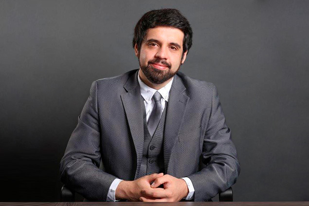

Somos una firma de abogados en México orientada al negocio global, ofreciendo a nuestros clientes una gama íntegra de soluciones legales, siempre procurando una atención personalizada basada en la confianza y la integridad.
Brindar servicios Jurídicos confiables con propuestas contundentes, innovadoras, creativas y funcionales, que reditúen en el éxito de los proyectos para nuestros clientes.
Aspiramos a posicionarnos como una de las firmas de referencia en el ámbito nacional en el derecho del trabajo y de la seguridad social, como la firma líder en la materia en el ámbito de la Comunidad Chihuahuense así como una empresa de servicios que pase de generación a generación y que sea reconocida por sus altos estándares de calidad y profesionalidad, y por su prestigio y reputación propia y de sus clientes.
MF es una firma legal especializada en proveer servicios legales a
clientes internacionales.
Nuestras oficinas están ubicadas en el centro de la Ciudad de Chihuahua, Republica
Mèxicana. Ejercemos diferentes áreas del negocio jurídico especializándonos en la prestación de servicios
offshore, entre estos: la constitución y administración de sociedades anónimas, sociedades de responsabilidad
limitada y fundaciones de interés privado, para aquellos clientes que desean crear una figura jurídica para
establecer subsidiarias de sus empresas matrices, aperturar cuentas bancarias offshore, protección de patrimonio,
planeamiento fiscal, adquisición de bienes inmuebles entre otros, aprovechando la ubicación de Chihuahua como
principal centro bancario, financiero y de negocios en Latinoamérica.
|  | ||
| Yennyfer Guadalupe Amaya Corral N.C 20550208 |
Leonel Osvaldo Gutiérrez Lugo N.C 20550187 | Juan Manuel Cristerna Prado N.C C18060599 |
|
Graduada de la Universidad Santa María la Antigua. Miembro fundador de la firma de abogados MF. |
Graduado de la facultad de derecho en la Universidad San José en Guadalajara. Miembro fundador de la firma de abogados MF. |
Graduado de la facultad de derecho en la Universidad Autonoma de Chihuahua. Miembro fundador de la firma de abogados MF. |